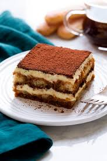

Tiramisu

Description
Tiramisu is a classic Italian dessert that translates to "pick me up." It features layers of coffee-soaked
ladyfinger biscuits and a creamy mixture of mascarpone cheese and whipped cream, sweetened with sugar.
Topped with a dusting of cocoa powder, this no-bake dessert offers a delicate balance of coffee and cream,
making it a beloved treat worldwide.
Ingredients:
- 250g mascarpone cheese
- 1 cup heavy cream (whipped to stiff peaks)
- 1/2 cup sugar
- 1 cup strong coffee (cooled)
- 2 tbsp coffee liqueur (optional)
- 12-15 ladyfinger biscuits
- Cocoa powder for dusting
Steps:
- Mix mascarpone and sugar until smooth. Fold in whipped cream.
- Combine coffee and liqueur in a shallow dish.
- Dip ladyfingers in coffee mixture and layer them in a dish.
- Spread a layer of mascarpone mixture over the ladyfingers. Repeat layers.
- Refrigerate for 4-6 hours. Dust with cocoa powder before serving.
Recipes more like this: